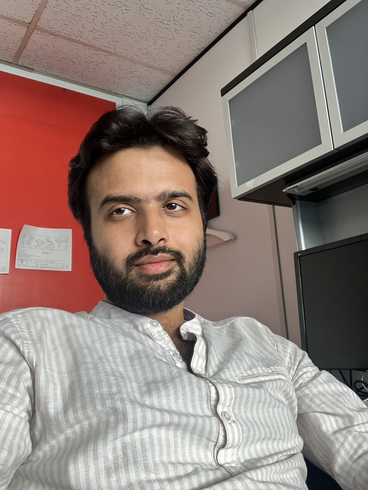

Nikhil Kumar
|  | MC 5647
|
Brief Bio
Research Interest
Theoretical Computer Science, Graph Theory, Combinatorial Optimization, Approximation Algorithms
Publications
with Davis Issac, Nadym Mallek and Ziena Zeif
STOC 2023
FOCS 2022
with Davis Issac, Nadym Mallek and Ziena Zeif
APPROX 2022
with Antonios Antoniadis and Gunjan Kumar
ISAAC 2021
ISAAC 2020
with Naveen Garg
ESA 2020
with Naveen Garg and András Sebő
IPCO 2020 (Journal: Math Programming)
with Syamantak Das and Lavina Jain
APPROX 2020
with Antonios Antoniadis, Naveen Garg and Gunjan Kumar
SODA 2020
with Sanjit Singh Batra & Amitabha Tripathi
The Ramanujan Journal
with Sanjit Singh Batra and Amitabha Tripathi
Integers: Electronic Journal of Combinatorial Number Theory
Last modified: July, 2023.